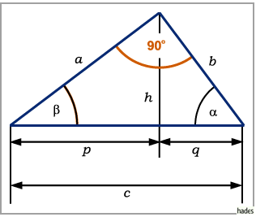
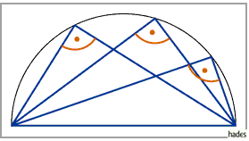

Grundformeln und Sätze
Verwendete Bezeichnungen: a, b - Katheten; c - Hypotenuse;  bzw.
bzw.  - die den Seiten a bzw. b gegenüberliegenden Winkel; h - Höhe; p, q - Hypotenusenabschnitte; S - Flächeninhalt.
- die den Seiten a bzw. b gegenüberliegenden Winkel; h - Höhe; p, q - Hypotenusenabschnitte; S - Flächeninhalt.

- Winkelsumme:
-
- Seitenberechnung:
- Satz des Pythagoras:
-
- Satz des Thales
- Im rechtwinkligen Dreieck liegt der Scheitel des rechten Winkels auf dem Halbkreis über der Hypotenuse, d.h., alle Peripheriewinkel bezüglich des Durchmessers eines Kreises sind rechte Winkel.

(s. auch Peripheriewinkel im Halbkreis.
- Sätze des Euklid:
-
- Flächeninhalt:
-